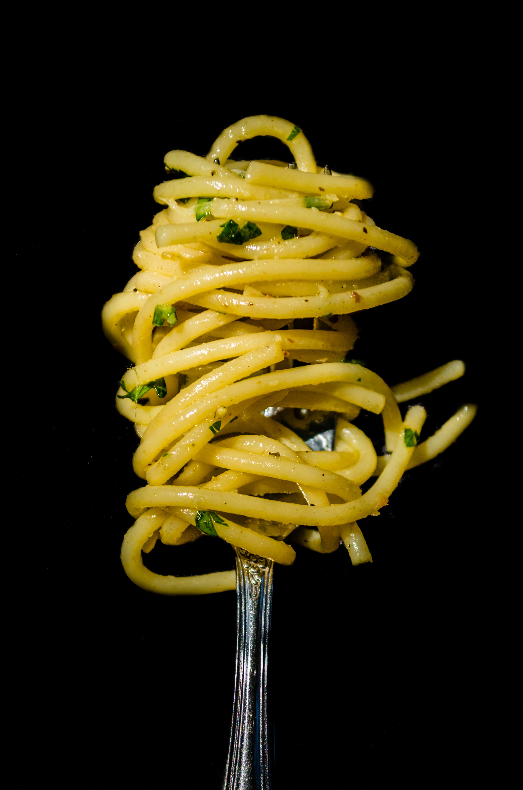

Pasta Aglio e Olio

Pasta Aglio e Olio is a culinary enchantment that unfolds
in simplicity and sophistication. This Italian classic,
renowned for its minimalist yet flavorful profile, presents a
canvas of pasta adorned with a delicate, golden-hued sauce.
Ingredients per 1 person
- 100 grams of Spaghetti
- 1 clove of garlic
- Red pepper flackes to taste
- 1/4 cup extra virgin olive oil
- Fresh parsley, chopped
- Salt to taste
- Grated parmesan cheese for garnish(optional)
- Cook the pasta in a large pot of salted boiling water
until al dente.
Reserve a cup of pasta water before draining.
- In a large pan, heat the olive oil over medium heat.
Add thinly sliced garlic and red pepper flakes.
Sauté until the garlic turns golden but not browned.
- Allow the garlic and red pepper flakes to infuse
into the olive oil over low heat for a few minutes.
This creates a flavorful base for the sauce.
- Add the cooked and drained pasta to the pan with the
garlic-infused oil.
Toss the pasta to coat evenly in the flavorful oil.
- Season with salt to taste. If the pasta seems dry,
add some of the reserved
pasta water gradually until you reach the desired consistency.
- Sprinkle chopped fresh parsley over the pasta.
This adds a burst of freshness to the dish.
- Plate the Pasta Aglio e Olio, and if desired, garnish
with grated Parmesan cheese.
Delight in the simplicity and rich flavors of this classic Italian dish.
Buon appetito!